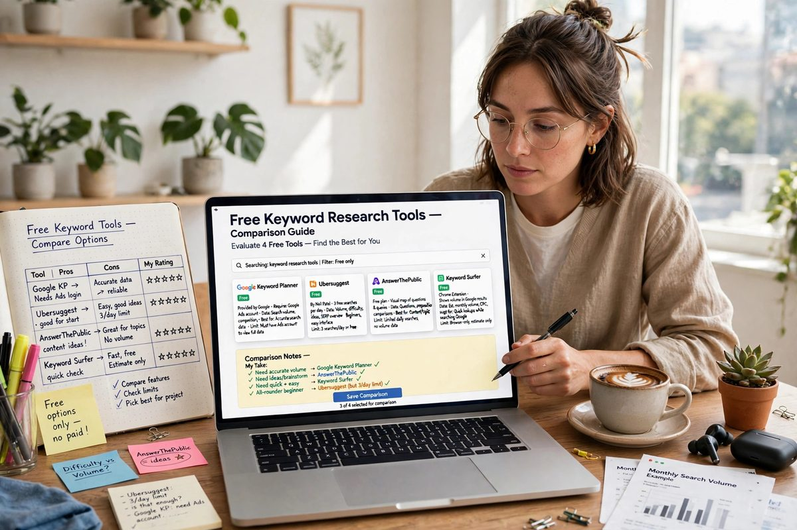

Home > Guides > Free Keyword Research Tools: What to Use When You Start
Free Keyword Research Tools: What to Use When You Start
A practical guide from Keyword Finder.

Paid keyword tools are powerful, but they are not the only way to find good keywords, and they are not necessary when you are starting. Free tools, search engine features and a little manual work can find plenty of keywords to build a site on. This guide reviews the free options that are actually useful, what each one is good for, and how to combine them into a simple workflow. It also warns you about the limits of free data, so you do not make decisions based on numbers that are only rough estimates.
Start with the search engine itself
The search box is a free keyword tool. Type a topic and watch the suggestions that appear; those are real phrases people search for. Scroll to the bottom of a results page for related searches, and look at the People Also Ask box for questions. Search a question and read the other questions that appear. These features are free, always up to date, and based on real searches. Use them every time you brainstorm, and write down the exact phrases you see. They are especially good for long-tail ideas and for questions you had not thought of.
Use free keyword tools for volume and ideas
Several free tools give search volume estimates and related keyword ideas. Some let you check a limited number of keywords each day without paying, and some are free with a search console account. Use them to check whether a phrase gets searches and to find related phrases you missed. Treat the volume numbers as rough estimates, not exact counts, because free tools often round or estimate. The direction matters more than the exact number: a phrase with clearly more searches than another is probably more popular, even if the exact figures are uncertain.
Use Search Console to learn from your own site
Once your site has some pages, Google Search Console is the most useful free tool you have. It shows the actual queries your site already appears for, including phrases you never targeted. Those queries are gold: they show real demand, and a small improvement to the page can bring more visits. Check the queries report regularly, look for phrases where you rank on page two, and improve those pages first. Search Console data is real, from your own site, and it costs nothing.
Build a simple free workflow
A simple workflow is: brainstorm with search suggestions, check volume with a free tool, look at the top results to judge competition, and track your own queries in Search Console. Do this once a month, keep the list in a spreadsheet, and note the volume, the intent and the page you will write. When you can afford a paid tool, you will already know what you need from it, and you will use it better. Until then, free tools used carefully are enough to grow a small site steadily.
Quick tips
- Use search suggestions every time you brainstorm
- Treat free volume numbers as rough estimates
- Check Search Console for real queries
- Keep your keyword list in one spreadsheet
Frequently asked questions
What is the best free keyword tool?
There is no single best one. Search suggestions and People Also Ask are excellent for ideas, a free keyword planner is good for volume, and Search Console is best for learning from your own site.
Are free keyword tools accurate?
They give useful estimates, but the numbers are often rounded or approximate. Use them to compare keywords with each other, not as exact traffic predictions.
When should I pay for a keyword tool?
When free tools no longer answer your questions, such as when you need detailed competition data or you research hundreds of keywords a month. Start free and upgrade when the work justifies it.